Lecture 3: Hardware-Aware Algorithm Design
The question: why is this kernel slow?
Your model is slow. You open a profiler, find the slowest kernel, and rewrite it with a better asymptotic algorithm. It runs slower. This happens constantly in ML systems, and this lecture explains why.
The standard way to judge an algorithm is big-O: Strassen matrix multiplication is O(N^2.8074) against naive O(N^3), so Strassen should win. But big-O ignores two things: the constants, which can dominate at real problem sizes, and implementation details, which matter enormously on real hardware. An asymptotically better algorithm can lose if it is not well suited to the machine.
The lecture’s Exhibit A is the meme from Lecture 1. A fancy new linear attention algorithm scales as O(N) in sequence length against standard attention’s O(N squared). On paper it wins. FlashAttention, a hardware-aware implementation of the exact O(N squared) algorithm, runs faster in wall-clock time. The constants and the memory behavior decided. The missing metric is hardware utilization: the fraction of the device’s theoretical peak that an implementation actually reaches. This lecture builds the tools to compute it.
A toy processor
What happens inside a processor is conceptually simple. Move items from memory to the processor. Perform some computation. Move the results back. Two hardware properties bound this loop, and they are properties of the hardware, not of your algorithm.
Memory bandwidth: the maximum number of items moved per second. Our toy processor moves 4 items per second.
Compute bandwidth: the maximum number of operations done per second. The toy processor does 8 operations per second.
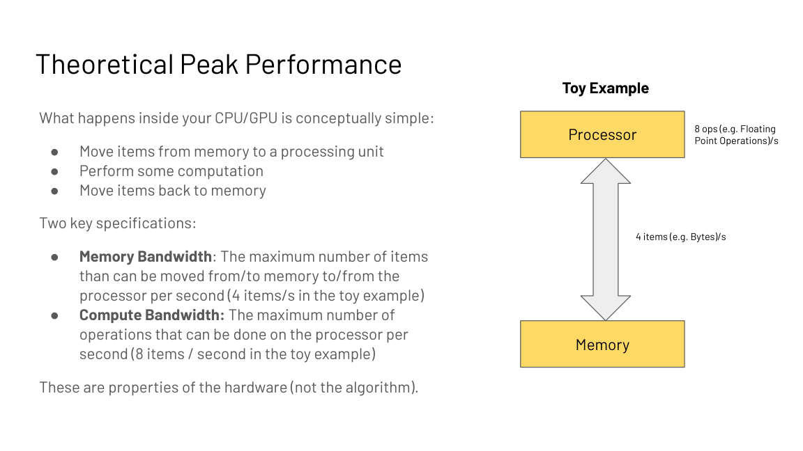
Define two times. Tmem is time spent on memory: (bytes accessed) / (memory bandwidth). Tmath is time spent on math: (operations) / (compute bandwidth). If memory and compute overlap perfectly, total time is max(Tmem, Tmath). The longer one is the bottleneck. If Tmath is longer, the program is compute bound. If Tmem is longer, it is memory bound. That single comparison drives every optimization decision in this course.
Now watch the toy work. The algorithm loads 8 items, computes 1 operation per item, and writes 8 items back. Load takes 2 seconds at 4 items/s. Compute plus stalls takes 2 seconds. Write takes 2 seconds. At steady state, 4 items arrive per second and the processor does 4 ops per second out of a possible 8. Result: 50% compute utilization, 100% memory utilization. Memory bound.
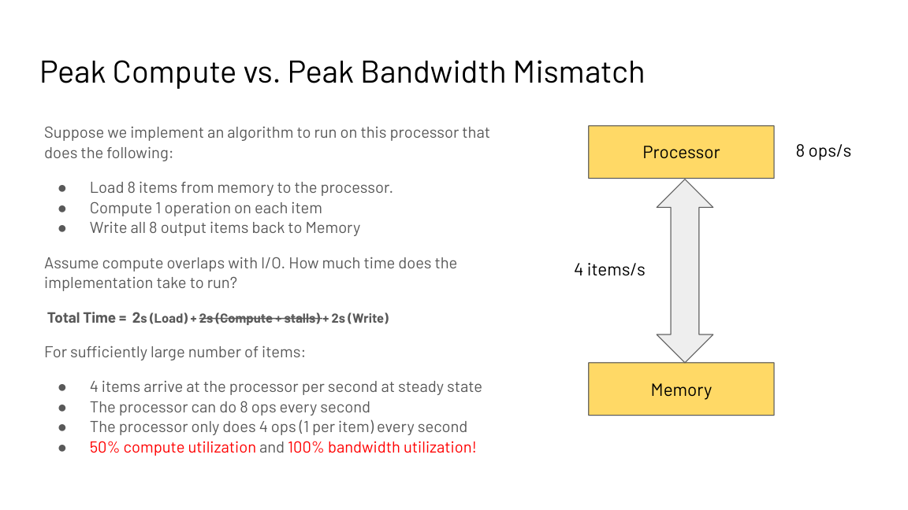
The diagnosis dictates the fix. Double the compute speed to 16 ops/s. Total time is unchanged: 25% compute utilization, 100% memory utilization. Faster math bought nothing. Now instead double the memory bandwidth to 8 items/s. The stages fall to 1 second each: 100% utilization of both, and the total time falls. Memory was the bottleneck, so bandwidth was the fix.
Flip the algorithm: load 4 items, compute 4 operations per item. Now the processor needs 16 ops per second but can do 8. Compute bound. Doubling compute to 16 ops/s cuts the total time. Doubling bandwidth would not. The lesson of the toy: diagnose first, then spend.
The key question
The toy gives the procedure, but nobody wants to simulate processors by hand. What is the one number that diagnoses any algorithm on any device? The answer is arithmetic intensity.
Arithmetic intensity and the ridge
The answer is a ratio. Arithmetic intensity (AI) is total operations divided by total bytes moved:
AI = (total FLOPs) / (bytes read + bytes written)
Each device has a ridge: peak FLOPs divided by peak bandwidth. The A100 does 312 TFLOPS (trillion floating-point operations per second) in FP16 and moves 1,935 GB/s:
ridge = 312e12 / 1935e9 = 161 FLOPs per byte
If your algorithm’s AI is below 161, it is memory bound on an A100. Above 161, compute bound. The ridge is a property of the hardware, not of your code.
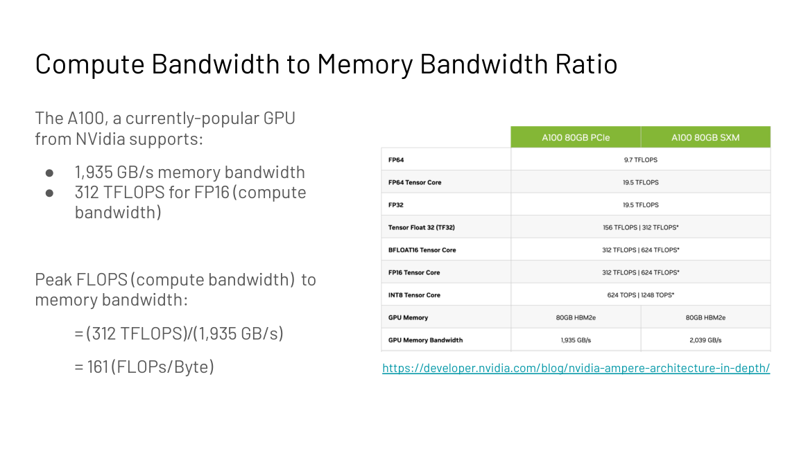
The roofline plots achievable performance against arithmetic intensity. The memory roof slopes up on the left. The compute roof is flat on the right. Your algorithm is a point on this plot. Left of the ridge: buy bandwidth, fuse kernels, tile better. Right of the ridge: buy compute, use tensor cores.

Subchapter: the ridge moves with the chip
The ridge is hardware, so it moves with the generation. Compute it for the current fleet from public dense specs:
| Chip | Peak FP16 | Bandwidth | Ridge |
|---|---|---|---|
| A100 | 312 TFLOPS | 1,935 GB/s | 161 |
| H100 | 989 TFLOPS | 3,350 GB/s | 295 |
| H200 | 989 TFLOPS | 4,800 GB/s | 206 |
| B200 | 2,250 TFLOPS | 8,000 GB/s | 281 |
| B200, FP8 | 4,500 TFLOPS | 8,000 GB/s | 562 |
Read the trend. Compute outran bandwidth from A100 to H100, so the ridge rose from 161 to 295. H200 kept H100’s compute and raised bandwidth, so the ridge fell to 206: a friendlier chip for memory-bound inference. B200 in FP8 pushes the ridge to 562.
A kernel with AI 200 is compute bound on an A100 (200 > 161) and memory bound on an H100 (200 < 295). The same code flips its bottleneck when the chip changes. Diagnose on the chip you run, not the chip the paper used.
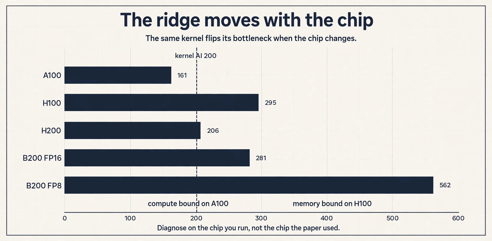
Worked: matrix multiplication
C = A B with A N by K, B K by M, C N by M. Each of the NM entries is a dot product: K multiplies and K adds, so 2K FLOPs. Total: 2MNK FLOPs. Memory in FP16 (2 bytes per value): read A (NK), read B (KM), write C (NM). Total bytes: 2(KM + NK + NM).
AI = 2MNK / 2(KM + NK + NM)
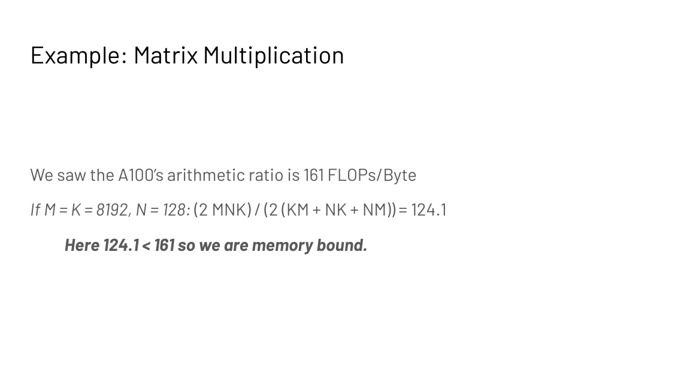
Two cases against the A100 ridge of 161. With M = K = 8192 and N = 128, AI = 124.1. Below the ridge: memory bound. This is the small-batch inference regime. With M = K = N = 8192, AI = 2730.6. Above the ridge: compute bound. This is the large training regime. Same operation, different shapes, different bottleneck. Shape is part of the diagnosis.
Six principles for high performance
The diagnosis is only useful if it prescribes a fix. The lecture gives six principles, one per bottleneck, each with a concrete mechanism.
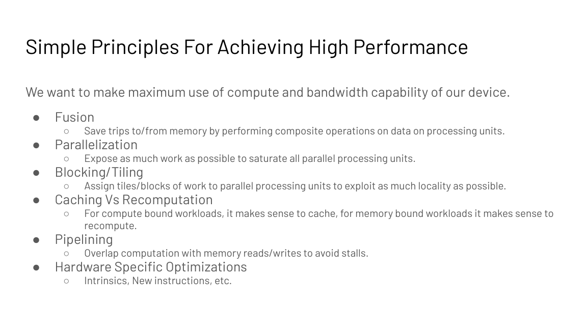
Subchapter: 1. fusion, keep the intermediate on-chip
Perform composite operations on data already in the processor. Save trips to and from memory. If a kernel applies f then g to the same data, fuse them so the intermediate never goes back to HBM. Critical for I/O-bound operations. FlashAttention is this principle applied to attention (L06).
The toy: two kernels, f then g, on 1 MB of data. Unfused: read 1 MB, apply f, write 1 MB to HBM, read 1 MB, apply g, write 1 MB. Four trips, 4 MB of traffic. Fused: read 1 MB, apply f, apply g on-chip, write 1 MB. Two trips, 2 MB of traffic. The math is identical. The traffic halves. For a memory-bound pipeline, runtime halves with it.
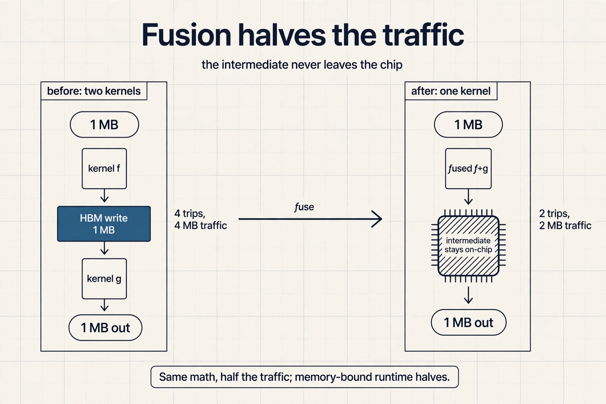
Subchapter: 2. parallelization, feed all 108 SMs
Expose enough work to saturate every parallel unit. An A100 has 108 streaming multiprocessors (SMs). A matmul needs at least 108 output tiles to keep them all busy. Fewer tiles means idle silicon.
The wave math: launch 100 thread blocks on 108 SMs and 8 SMs sit idle, one wave at 93 percent utilization. Launch 216 blocks and each SM takes 2, two full waves, 100 percent. Launch 150 and you get one full wave plus 42 stragglers: the second wave costs a full wave of time for 42 blocks of work. This is wave quantization, and it is why tile counts are tuned to multiples of the SM count. The same kernel at 150 blocks can run slower than at 108.
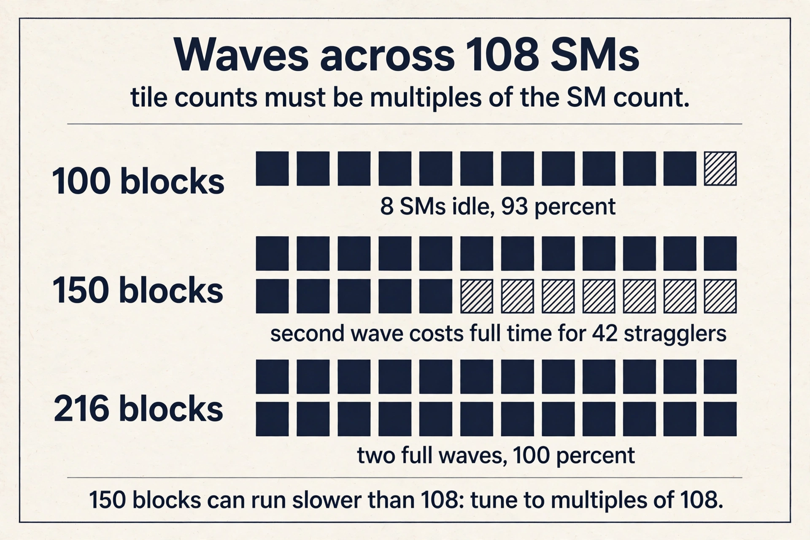
Subchapter: 3. tiling, share inputs on-chip
Assign tiles of work to units to exploit locality. Tiles fit in fast on-chip memory. Worked on matmul: in the naive version each thread computes one output, reads a row of A and a column of B (2K values), and writes 1 value. AI approaches 0.5 for large K. With 1D tiling, each thread computes 2 outputs, reusing one row of A across 2 columns of B: AI approaches 0.67. With 2D tiling, each thread computes a 2 by 2 tile: AI approaches 1.0. The pattern: reuse data already on-chip before it goes back to HBM.
naive : thread -> 1 output | reads row A + col B (2K) | writes 1 1D : thread -> 2 outputs | reads row A + 2 cols (3K) | writes 2 2D : thread -> 2x2 tile | reads 2 rows + 2 cols (4K)| writes 4 rule : share inputs across outputs on-chip, AI rises with reuse
The rule in one line: share inputs across outputs on-chip, and AI rises with reuse. Real kernels tile to the SRAM size, not to 2 by 2: a 128 by 128 tile reuses each loaded value 128 times, and AI climbs into the hundreds. The worked example shows the mechanism; the tile size sets the scale.
Step 1: the ridge. B200 does 2,250 TFLOPS FP16 over 8,000 GB/s: ridge = 281 FLOPs per byte. Step 2: compare. AI 400 is above 281, so the kernel is compute bound on a B200. Step 3: prescribe. Optimize the math: tensor cores, FP8, better tiling. Buying bandwidth would not help. Step 4: sanity check. The same kernel on an H100 (ridge 295) is also compute bound. But a kernel with AI 200 is compute bound on the A100 (ridge 161) and memory bound on the H100: the diagnosis travels with the chip. FP8 doubles the FLOPs (4,500 vs 2,250 TFLOPS) while bandwidth stays 8,000 GB/s. The ridge is their ratio, so it doubles to 562. Lower precision makes more kernels memory bound, because each byte now feeds twice the math. This is why FP8 inference is a bandwidth game.
Decode at batch 1 has AI around 2 FLOPs per byte: each token streams the full weights once for a couple of FLOPs per byte. The H200 ridge is 206. AI 2 is far below, so decode is memory bound. The fixes all attack bytes: quantize weights to INT4 (70B goes from 140 GB to 35 GB, and each token streams 4x fewer bytes), batch requests (batch 32 raises AI toward the ridge), and shrink the KV cache (GQA, quantization, eviction). Do not optimize the math: the FLOPs are not the bottleneck. The weights are read once per batch, not once per token. With batch 32, one weight read serves 32 tokens worth of math: AI rises 32x. The same bytes feed more FLOPs. Batching is the cheapest way to climb toward the ridge.
When the recompute is asymptotically heavier than the store. KV caching is the case: recomputing keys and values each step would redo O(N) attention work per token, growing quadratically over the sequence. Storing them costs O(N) bytes per layer once. The bytes are cheap next to the FLOPs, even on the memory-bound side of the ridge. The rule “recompute when memory bound” holds only when the extra math is small: compare the FLOPs of recompute against the bytes of the store, at your precision, on your chip. Because the store would cost N squared bytes of HBM traffic and the recompute replays cheap on-chip math from a small cached state. The FLOPs are free on the memory-bound side, and the bytes saved are quadratic. The comparison favors recompute by the same logic that favors caching for the KV case.
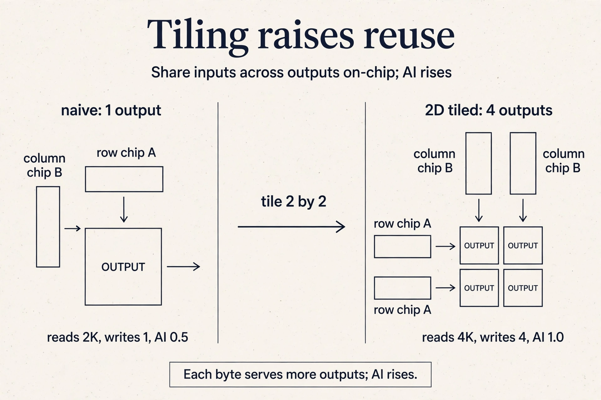
Subchapter: 4. caching versus recomputation, the decision rule
For compute-bound workloads, cache intermediates. For memory-bound workloads, recompute them: the extra math is free when memory is the bottleneck.
Two worked cases from this course. Autoregressive generation: predicting one token, appending it, and repeating would recompute keys and values for the whole prefix every step. But past keys and values never change, so they are cached: KV caching (L04). The workload is memory bound, yet caching wins here, because the recompute would redo O(N) attention work per step. The rule has an exception when recompute is not cheap.
FlashAttention’s backward pass: recompute the attention matrix from a small cached state instead of storing it (L06). The matrix is N by N; storing it costs N squared bytes of traffic, and the workload is memory bound. Recompute wins.
The decision rule: compare the bytes of storing against the FLOPs of recomputing, on your side of the ridge. Memory bound: bytes are dear, FLOPs are free, recompute. Compute bound: FLOPs are dear, bytes are cheap, cache. The exception: when the recompute itself is asymptotically heavier, cache anyway.
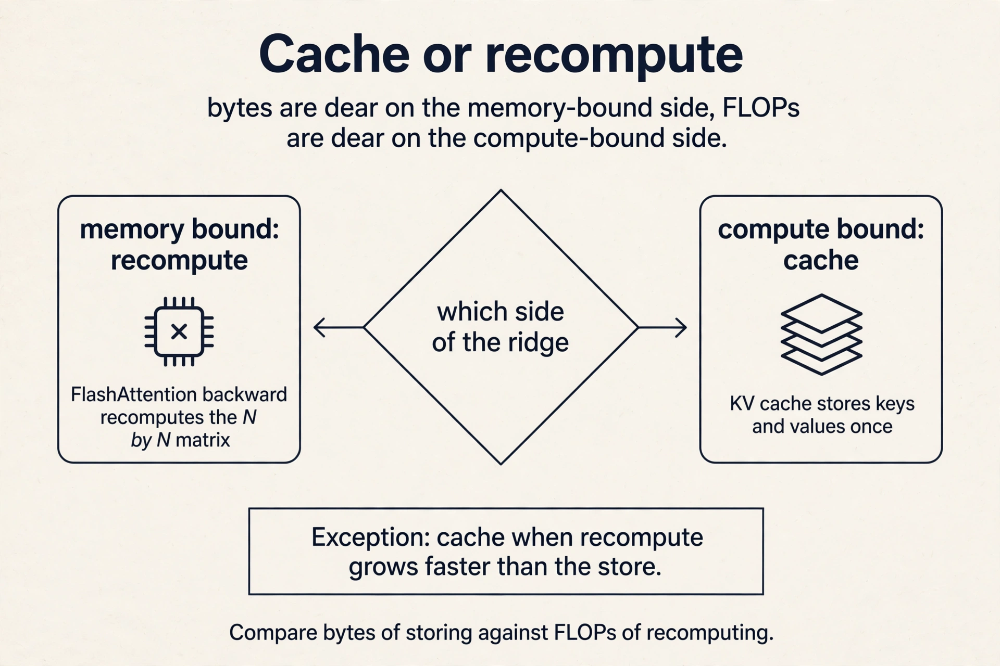
Subchapter: 5. pipelining, hide behind the max
Overlap computation with memory reads and writes to avoid stalls. This is the assumption behind the max(Tmem, Tmath) model: the two hide behind each other.
The toy: a kernel reads 1 MB (1 ms) then computes (1 ms). Serial: 2 ms per tile. Pipelined: while the compute units work on tile 1, the memory units fetch tile 2. Steady state: 1 ms per tile. The max formula is the pipelined time, not the serial time. Double buffering is the mechanism: two tiles on-chip, one computing, one loading. Without it you pay the sum. With it you pay the max.
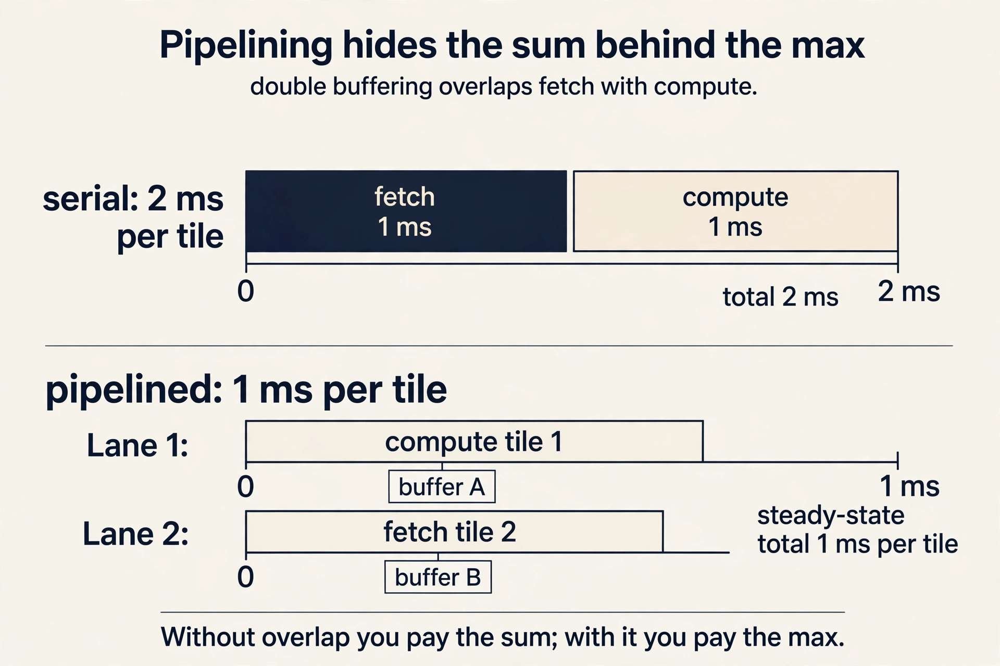
Subchapter: 6. tensor cores, 16 by 16 in silicon
Intrinsics, tensor cores, new instructions. The lecture’s tensor-core example: modern GPUs multiply 16 by 16 tiles natively, and launching them costs time, so tile sizes should keep them busy. This is the same reuse story as tiling, stated in silicon.
The numbers: an A100 tensor core reaches 312 TFLOPS in FP16; its plain CUDA cores reach about 19.5 TFLOPS in FP32. The 16x gap is why matmuls target tensor cores and why tile dimensions are multiples of 16. A kernel tiled to 13 by 13 pads to 16 and wastes the padding: utilization leaks at the edges. Hardware-specific means: know the native tile, tile to it.
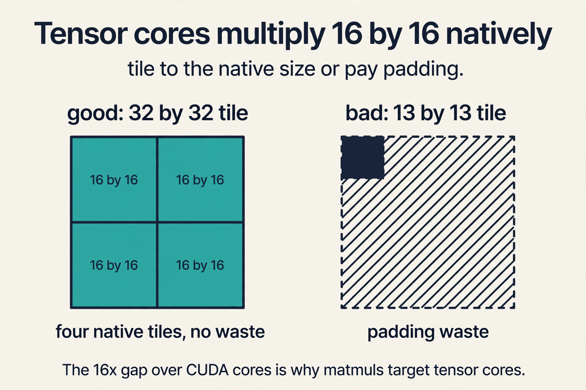
flowchart LR
d[Diagnose: memory or compute bound?] --> f[Fuse kernels]
f --> p[Parallelize across SMs]
p --> t[Tile for locality]
t --> c{Bound?}
c -- memory --> r[Recompute]
c -- compute --> k[Cache]
Where the memory lives
One fact underlies tiling, fusion, and caching: the GPU is a memory hierarchy, not one pool. On an A100: registers, 256 KB per SM, private to threads. Shared memory, 192 KB per SM, visible to a thread block. L2 cache, 40 MB. HBM device memory, 40 GB at about 2 TB/s. Speed rises as you go up. Capacity rises as you go down.
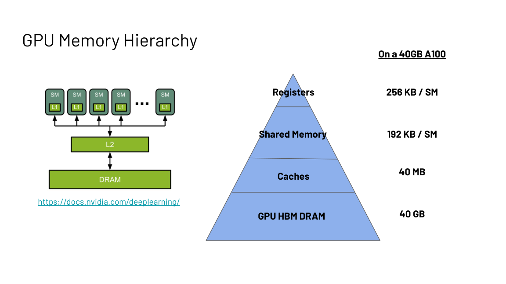
Every optimization in this course is a decision about which pool holds which data. Keep the hot tiles in SRAM and registers. Keep the model in HBM. Never pay for a round trip you can avoid. L05 defines this hierarchy as the device block and shows how code actually executes on it.
What is used where: real chips and real kernels
Every fast kernel in production is a point in this chapter’s design space. Facts as of October 2026.
| System | Principles it embodies | Why |
|---|---|---|
| FlashAttention | fusion, tiling, recompute | exact attention with O(N) memory traffic; public |
| vLLM (PagedAttention) | memory-hierarchy placement | KV cache in non-contiguous blocks; public paper 2023 |
| TensorRT-LLM | fusion, tensor cores | NVIDIA’s inference compiler; fuses whole transformer blocks |
| DeepSeek DeepGEMM | hardware-specific, FP8 | open-source FP8 GEMM tuned for Hopper; public |
| PyTorch torch.compile | fusion | fuses pointwise ops automatically via Triton |
| cuBLAS | tiling, tensor cores | NVIDIA’s matmul; the roofline-optimal baseline |
Read any of them as answers to two questions: which side of the ridge does it live on, and which principle moved it there.
Mapping back: each principle answers one bottleneck
| Bottleneck | Principles that fix it |
|---|---|
| Memory bound (AI below the ridge) | Fusion, tiling, recomputation: move less, reuse more |
| Compute bound (AI above the ridge) | Caching, tensor cores, more math per byte |
| Idle hardware (too little work) | Parallelization: at least 108 outputs on an A100 |
| Stalls (memory and compute serialized) | Pipelining: overlap to approach max(Tmem, Tmath) |
The honest price
The roofline is a model, and models have limits. The max() formula assumes perfect overlap. Real kernels add launch and synchronization costs. The ridge is hardware-specific: the A100’s 161 does not transfer to other chips. And the diagnosis is per shape, not per operation: the same matmul flips from memory bound to compute bound as N grows from 128 to 8192. Diagnose the workload you actually run, on the device you actually run it on.
Compare Tmath, the time the math takes, against Tmem, the time the data movement takes. Total time is the max of the two when they overlap. Whichever is longer names the bottleneck. This single comparison drives every optimization decision in the course. Modern GPUs pipeline memory transfers with computation, so the two hide behind each other. The max formula is the ideal; real systems approach it with pipelining, which is one of the six principles.
Arithmetic intensity is total FLOPs divided by total bytes moved between memory and processor. The ridge is the device’s peak FLOPs divided by its peak memory bandwidth: 312 TFLOPS over 1,935 GB/s equals 161 FLOPs per byte on an A100. Below the ridge you are memory bound; above it, compute bound. Its memory access. AI 100 sits below the ridge of 161, so the bottleneck is data movement. Faster math cannot help until the bytes per operation drop.
FLOPs are 2MNK and bytes are 2(KM + NK + NM) in FP16, giving AI = 124.1 FLOPs per byte. The A100 ridge is 161. Since 124.1 is below 161, the operation is memory bound. Growing N to 8192 raises AI to 2730.6, flipping it to compute bound. The same kernel changes bottleneck with shape. Inference runs small batches, so N is small and the bytes of the weight matrices dominate the FLOPs. Training runs large batches with large N, pushing AI above the ridge. This is why inference optimization is mostly a memory-bandwidth game, as Lecture 4 shows.
Data reuse. The naive thread loads 2K values per output element computed. The 2D-tiled thread loads 4K values but computes 4 outputs, sharing rows and columns in fast on-chip memory. Nothing about the math changed; the bytes per operation fell because each loaded byte served more outputs.
Follow-up: Why did the intensity only double instead of jumping far higher? Because the 2D tile is small: 2 by 2. Each loaded byte serves only 2 outputs. Bigger tiles raise the reuse ratio, and the A100-sized tiles in real kernels push intensity orders of magnitude higher. The worked example shows the mechanism; the tile size sets the scale.
Recap: the whole lesson on one screen
The story in eight steps. Each step answers the one before it.
- Big-O does not run your code. Strassen beats naive multiplication asymptotically; constants and implementation decide real runtime. Hardware utilization is the missing metric.
- The toy processor. Move data, compute, move back. Total time is max(Tmem, Tmath). The longer one is the bottleneck, and only it is worth fixing.
- Diagnose before you optimize. Doubling compute on a memory-bound kernel changes nothing (the toy proves it). Doubling bandwidth cuts the time. Fix the bottleneck, not the hobby.
- Arithmetic intensity is the diagnosis. FLOPs per byte. Below the device ridge you are memory bound; above it, compute bound. A100 ridge: 161 FLOPs/byte.
- The roofline makes it visual. Memory roof slopes up left of the ridge; compute roof is flat right of it. Place your algorithm, then read the prescription.
- Shape decides the bottleneck. Same matmul: AI 124 with N=128 (memory bound), AI 2731 with N=8192 (compute bound). Inference is usually the first case.
- Six principles fix the bottleneck. Fusion, parallelization, tiling, caching versus recompute, pipelining, hardware-specific tricks. One prescription per bottleneck.
- The GPU is a memory hierarchy. Registers, shared memory, L2, HBM: faster upward, larger downward. Every optimization is a placement decision.
Official sources and further reading
Official: - Hardware-Aware Algorithm Design slide deck (Fall 2023 headers). - NVIDIA CUDA C++ Programming Guide: SIMT, warps, thread blocks. - NVIDIA Ampere Architecture In-Depth: A100 specs.
Further reading: - Williams et al., “Roofline: An Insightful Visual Performance Model”: the original roofline paper.
Caveats from these sources. A100 figures (312 TFLOPS FP16, 1,935 GB/s) are the dense specs from the slides; sparse tensor-core throughput is higher. The toy overlap model (total = max) is ideal; real kernels approach it but add launch and synchronization costs. The tiling AI limits (0.5, 0.67, 1.0) follow the slide expressions for large K.
Go deeper
- The Memory Wall Explained: Why Peak FLOPs Do Not Predict Real Performance: https://www.youtube.com/watch?v=DfnV32AmtlE
- How is hardware reshaping LLM design (roofline, memory wall, inference engines): https://www.youtube.com/watch?v=BSzhrZOp2x8
- Roofline analysis on Apple Silicon GPUs (worked, with code): https://github.com/wangkuiyi/wangkuiyi.github.io/blob/HEAD/roofline.md
- NVIDIA CUDA C++ Programming Guide: https://docs.nvidia.com/cuda/cuda-c-programming-guide/
- NVIDIA Ampere Architecture In-Depth: https://developer.nvidia.com/blog/nvidia-ampere-architecture-in-depth/
Connections to the other courses
- CS336 L05: the full GPU architecture treatment; this lecture is its decision procedure.
- CS336 L06: Triton kernels: tiling and fusion in code.
- CS229S L05: the device block: the hierarchy here, defined as the machine’s three shells.
- CS229S L06: FlashAttention as fusion plus tiling plus recompute.
- CS229S L04: KV caching as the caching-versus-recompute decision.
Sources
- SLIDESHardware-Aware Algorithm Design slide deck (Fall 2023 headers)
- SUPPLEMENTNVIDIA CUDA C++ Programming Guide
- SUPPLEMENTNVIDIA Ampere Architecture In-Depth
- SUPPLEMENTRoofline model (Wikipedia)